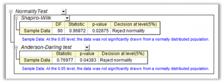

正規性の検定は、標本データが正規分布の母集団から集められたかどうか(一定の許容範囲内で)を決定するのに使用されます。スチューデントt検定、一元および二元配置ANOVAなどの多数の統計的検定では、正規分布の標本母集団が必要です。正規性の仮定が有効でない場合、検定の結果は信頼できません。
|  |
Originでは6つの正規性検定が利用可能です。以下の表で、検定方法を選択する簡単なルールをご確認ください。
詳細は、正規性の検定の選択と結果の解釈の章をご覧ください。
| 正規性の検定 | サマリー |
|---|---|
| Shapiro-Wilk | 一般的な正規性検定ですが、重複したデータや大きな標本数では利用できません。 |
| Kolmogorov-Smirnov | ガウス分布が特定の平均と分散で分布しているかどうか検定します。 |
| Lilliefors | Kolmogorov-Smirnov 検定に修正P値を追加したものです。小さな標本数で対称な分布の時に最も有効です。 |
| Anderson-Darling | いくつかのデータセットではKolmogorov-Smirnov検定よりも良い結果をもたらします。 |
| D'Agostino's K-Squared | 尖度や歪度の修正に最も適しています。 特に、正規ではない値に効果的です。 |
| Chen-Shapiro | Shapiro-Wilk検定の拡張版で、指数のロスがありません。 標本数に制限(10 ≤ n ≤ 2000)があります。 |
データ範囲内の欠損値は、分析から除外されます。
Origin 2015から、グループ範囲内の欠損値と対応するデータ値は分析から除外されます。これ以前のバージョンでは、グループ範囲内の欠損値は、一つのグループとして扱われます。
メニューから正規性の検定を実行するには、次のように選択します。
|
このセクションで説明している項目 |